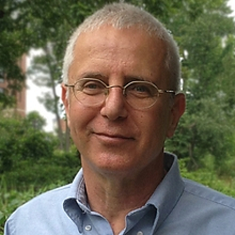

Christina Leslie
Christina Leslie
Sloan Kettering Institute, USA
Short Bio.
My group develops statistical and machine learning methods to model transcriptional and post-transcriptional gene regulatory mechanisms, epigenetic programs governing cell fate decisions in differentiation, and the dysregulation of gene expression programs in cancer. We have a deep interest in developing computational modeling approaches to understand epigenetic and transcriptional programs underlying cellular differentiation and cell state identity. We have developed discriminative sequence models for learning multiple DNA sequence signals from DNase-seq and ATAC-seq mapped enhancers and a regression strategy for inferring transcriptional programs by predicting gene expression changes in cell state transitions from the DNA sequence content and lineage history of active enhancers. We have also long been involved in the global study of alternative cleavage and polyadenylation and developed new computational and statistical methods for analyzing 3’ end sequencing data. We have extensive expertise in the analysis of many next generation sequencing data types (DNase-seq, ATAC-seq, transcription factor and histone modification ChIP-seq, RNA-seq, 3’-seq, Ago CLIP-seq for mapping microRNA binding sites) as well as high-throughput chromatin conformation capture technologies (especially Hi-C and Hi-ChIP). I am PI of an NCI U54 Center for Cancer Systems Immunology at MSKCC, which studies the role of tumor-immune interactions in cancer and response to cancer immunotherapy. I am also co-chair of the Analysis Working Group of the ENCODE 4.0 project, where I lead a computational project to incorporate data on 3D genomic architecture into epigenomic and gene regulatory models.
Eytan Ruppin

Eytan Ruppin
National Cancer Institute, USA
Eytan Ruppin, M.D., Ph.D., is a computational biologist whose research is focused on developing and harnessing data science approaches for the integration of multi-omics data to better understand the pathogenesis of cancer, its evolution and treatment. We collaborate with numerous experimental cancer labs, aiming to develop new computational approaches to jointly gain a network-level integrative view of the systems we study, focusing on cancer metabolism, genomics and immunotherapy. From a translational perspective, together with our collaborators, we aim to predict and test novel drug targets and biomarkers to treat cancer more effectively. After serving as a Computer Science and Medicine professor at TAU (Israel) and UMD (Maryland), Eytan has recently joined the NCI to setup and head its new Cancer Data Science Lab (CDSL).
Joel Saltz
Joel Saltz
Stony Brook University, USA
Dr. Saltz is a pioneer in developing Digital Pathology tools, methods and algorithms with the ultimate goal of extracting and leveraging digitalized Pathology information to better predict cancer outcome and to steer cancer therapy. He is also an expert in high-end computing and has developed a variety of highly cited systems software methods.
Dr. Saltz has served as founding chair of the Department of Biomedical Informatics at both Emory University, The Ohio State University and now Stony Brook University. A fellow of the American College of Medical Informatics, Dr. Saltz received his bachelor’s and master’s degrees in mathematics at the University of Michigan and then entered the MD/PhD program at Duke University, with his PhD studies performed in the Department of Computer Sciences. He later completed his residency in clinical pathology at Johns Hopkins School of Medicine.